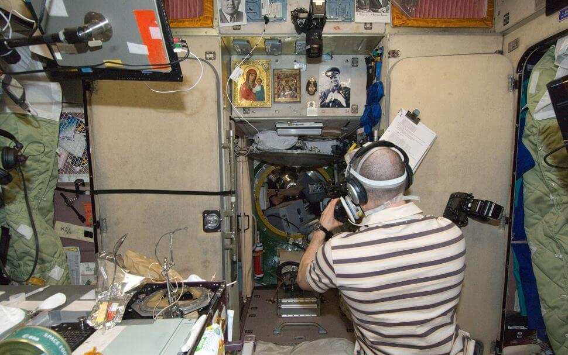

ဒီလို ဖိအားလျော့ကျမှု ဖြစ်စဉ်ဟာ တမြန်နေ့က ဖြစ်ပွားခဲ့တဲ့ ရုရှား သုတေသနယာဉ် နော်ကာကြောင့် အပြည်ပြည်ဆိုင်ရာ အာကာသစခန်းကြီး လမ်းကြောင်းလွဲသွားတဲ့ ဖြစ်စဉ် မဖြစ်ပေါ်မီ နှစ်ပါတ်ခန့် အလိုကတဲက စတင် ဖြစ်ပွားခဲ့တာ ဖြစ်တယ်လို့ သူက ပြောပါတယ်။ ဒါပေမယ့် ဒီဖြစ်စဉ် နှစ်ခုဟာ တစ်ခုနဲ့ တစ်ခု ဆက်စပ်မှု မရှိဘူးလို့ သူက ပြောပါတယ်။
ဒီလို လေယိုစိမ့်မှု ဖြစ်ပွားတာဟာ ရုရှားအဖွဲ့သားတွေရဲ့ အိပ်ဆောင်အဖြစ် အသုံးပြုနေတဲ့ ဇဗက်ဇဒါ (Zvezda Module) အပိုင်းမှာ ရှိတဲ့ အက်ကြောင်းကြောင့် ဖြစ်ပွားခဲ့တာ ဖြစ်ပါတယ်။ ဒီအက်ကြောင်း ရှိနေတာကို ရှာဖွေတွေ့ရှိ ခဲ့တာကတော့ အချိန် အတော်ကြာ နေခဲ့ပြီ ဖြစ်ပါတယ်။ အခုလို ဖိအား ကျဆင်းသွားပေမယ့်လဲ ပြန်လည်ပြုပြင်မှုတွေကြောင့် ဖိအားဟာ နောက် ၂၄ နာရီအတွင်း ပုံမှန်ကို ပြန်လည် ရောက်ရှိလာမယ်လို့ သူက ပြောပါတယ်။
“အခုဖြစ်စဉ်ဟာ ကျွန်တော်တို့ မျှော်လင့်ထား ပြီးသား ဖြစ်စဉ် တစ်ခုသာ ဖြစ်ပါတယ်။ ဒီလူနေတဲ့ အပိုင်းကလဲပြဿနာ ဖြစ်နေတာ အတော်ကြာနေ ခဲ့ပါပြီ။ ဖိအားရုတ်တရက် ကျသွားတာမျိုး မဟုတ်သလို သုတေသနယာဉ် ဖြစ်စဉ်နဲ့လဲ ဘာမှ ပါတ်သက်မှု မရှိပါဘူး” လို့ သူက ပြောပါတယ်။
ဒီ လူနေခန်းရဲ့ ဖိအားဟာ သုတေသနယာဉ် ကြောင့် လမ်းကြောင်းလွဲ ဖြစ်စဉ် ဖြစ်ပွားခဲ့တဲ့ နေ့က ပုံမှန်ရဲ့ သုံးပုံ တစ်ပုံလောက်ထိ ကျဆင်းသွားခဲ့ပါတယ်။ ဒါပေမယ့် မကြာခင် ပြန်တက်လာမယ်လို့ သူက ဆက်ပြောပါတယ်။
ဒီ လေယိုစိမ့်တဲ့ အက်ကွဲကြောင်းကို မနှစ်ကတဲက ရှာတွေ့ခဲ့တာ ဖြစ်ပါတယ်။ ဒီအက်ကြောင်းကို ပိတ်နိုင်ဖို့ အကြိမ်ကြိမ် ကျိုးစားခဲ့ ပေမယ့် အခုထိတော့ အောင်မြင်မှု မရရှိသေးပါဘူး။ ဒါပေမယ့် ယာဉ်အဖွဲ့သားတွေအပေါ် ဘာမှတော့ အန္တရာယ် သက်ရောက်မှု ရှိမှာ မဟုတ်ဘူးလို့ သူက ပြောပါတယ်။
ပြီးခဲ့တဲ့ သောကြာနေ့ကလဲ နော်ကာ သုတေသနယဉ်နဲ့ ချိတ်ဆက်ပြီးနောက် ပရိုဂရမ် မှားယွင်းမှုကြောင့် ဒုံစက်တွေ မှားယွင်းနှိုးမိပြီး အပြည်ပြည် ဆိုင်ရာ အာကာသ စခန်းကြီး ၄၅ ဒီဂရီလောက် လမ်းကြောင်းလွဲ သွားခဲ့ ပါသေးတယ်။ ဒီဖြစ်စဉ် အတွင်း အာကာသ စခန်းနဲ့ မြေပြင်နဲ့ အဆက်အသွယ်လဲ မိနစ် အတော်ကြာအောင် ပြတ်သွားခဲ့ပါ သေးတယ်။
ဒီစနေကတော့ သုတေသနယာဉ်ရဲ့ အတွင်းက လေထုကို စမ်းသပ်စစ်ဆေးပြီး အန္တရာယ် ကင်းရှင်းကြောင်း တွေ့ရတာမို့ ရုရှားအာကာသ ယာဉ်မှူးတွေ စတင် ဝင်ရောက် ခဲ့ကြပါတယ်။
လက်ရှိမှာ အခု အက်ကြောင်းပေါ်နေတဲ့ အပိုင်းအပါအဝင် အပြည်ပြည် ဆိုင်ရာ အာကာသ စခန်းပေါ်က ရုရှား အပိုင်းတွေရဲ့ အနာဂါတ်နဲ့ ပါတ်သက်လို့ အာကာသ အင်ဂျင်နီယာနဲ့ သိပ္ပံ ပညာရှင်တွေကြား အရေးတကြီး ညှိနှိုင်းမှုတွေ ပြုလုပ် နေကြပါတယ်။ ဒီယာဉ် အပိုင်းတွေရဲ့ သက်တမ်းဟာ ၂၀၂၄ မှာ ကုန်ဆုံးတော့မှာ ဖြစ်လို့ ၂၀၂၄ ခုနှစ်ကို ကျော်လွန်ပြီး ဆက်ထားဖို့ စိတ်ချရမှု ရှိမရှိ ဆွေးနွေးနေကြတာ ဖြစ်တယ်လို့ ရုရှ အာကာသ အေဂျင်စီ အကြီးအကဲ ရိုဂိုဇင် (Rogozin) က သတင်းဌာနကို ပြောကြားခဲ့ပါတယ်။


